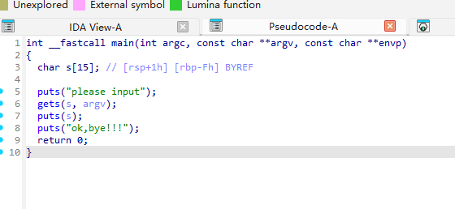

【BUUCTF】PWN-刷题记录-rip
题目信息
解题步骤
程序是amd64、小端程序，GOT表在运行时仍然可写，存在GOT覆盖风险，没有栈保护,栈可执行、程序基地址固定
使用ida进行分析：

上述代码中，我们注意：
1 | char s[15]; // [rsp+1h] [rbp-Fh] |
s数组大小为 15 字节，位于栈上。- 使用了 危险函数
gets()：它会无限读取输入直到换行，完全不检查缓冲区边界。
gets(s) 会把你输入的所有字节写到栈上：先写入 s（15字节），接着覆盖 saved rbp（8字节），再覆盖 return address（8字节），后面跟着你继续写的字节都会保存在 return address 之后的栈上（函数返回时 ret 从栈上弹出的就是我们写入的返回地址）。
s距离rbp仅0xF = 15字节，而rbp上方 8 字节是 返回地址（return address）。- 因此，输入超过 15 + 8 = 23 字节 即可覆盖返回地址。
程序还有一个fun函数，调用了system函数，地址为0x401186
程序的system函数，地址为0x404058
这道题基本是典型的ret2fun，我们可以覆盖返回地址，让程序执行 fun() 函数（地址 0x401186）
- 输入 23 字节填充（覆盖到返回地址）
- 写入
fun函数地址（小端序）：p64(0x401186) - 发送 payload，触发溢出，
ret跳转到fun，执行/bin/sh
1 | from pwn import * |
那么大家发现了一个问题吗？为什么我在fun地址后+1了？fun_addr = 0x401186 +1
1 | ; Attributes: bp-based frame |
1 | 0x401186: push rbp |
0x401186的第一条指令是push rbp（opcode0x55）。fun + 1即0x401187刚好是下一条指令mov rbp, rsp的起始字节（opcode0x48）。- 如果把返回地址覆盖成
0x401186（push rbp），当 CPU 执行到这里时会先执行push rbp，也就是把当前rbp再次压入栈，rsp 会减 8。这会改变栈指针（和栈对齐），可能导致之后call _system时栈不满足 ABI 对 call 前对齐 的要求，从而在某些环境下造成 crash（尤其当system或 libc 内部对栈对齐敏感时）。 如果你把返回地址改成
0x401187（mov rbp, rsp），你跳过了push rbp，不会额外改变rsp，因此更有可能维持或更接近你在 exploit 时期望的栈对齐状态，从而 更稳定地成功调用system("/bin/sh")。有两点常被误解：
“地址必须 16 字节对齐” —— 这是对函数调用的 ABI 要求（call 之前），但 CPU 本身并不强制指令地址按 16 字节对齐；x86 指令是可变长且可以从任何有效指令边界开始执行。
“跳到奇数地址会异常” —— 只要你落在一个有效的指令起始字节（而不是指令中间导致非法解码），即可正常执行。
0x401187在这里是mov rbp, rsp的起始字节，是合法的入口点，所以可行。
fun + 1是一个常见且合理的技巧：它跳过push rbp，避免多做一次rsp -= 8，从而更容易满足call _system执行前的栈对齐要求，结果更稳定。
1 | from pwn import * |